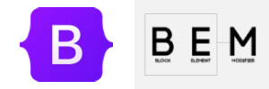

- 
- BEM / Bootstrap
- BEM(Block, Element, Modifier) HTML 및 CSS의 클래스에 대해 널리 사용되고 있는 명명 규칙과 대표적인 CSS Framework의 Bootstrap 이미 만들어진 ui를 클래스 이름으로 지정하면 간편하게 스타일링 가능
- GitHub / npm / yarn
- 버전관리 프로그램인 GitHub에 프로젝트를 틈틈이 올리면서 익히고, npm/yarn으로 패키지를 설치/수정/삭제하는 작업을 편리하고 안전하게 수행
step 1
step 2
step 3
step 4
step 5
- HTML / CSS / Javascript
- 프론트엔드의 기초 HTML, CSS, Javascript HTML/semantic tags, 페이지 구조, styling, layouts, 반응형 디자인 등의 개념을 먼저 잡고, 언어 자체/문법에 대해 익숙해질 때까지 Javascript를 공부 후 API들을 활용하기
- Typescript / React / NextJs
- Typescript(Javascript + typed)는 Js보다 안정성이 추가, React는 사용자 인터페이스를 만들기 위해 사용되며, JS의 대표 라이브러리. Next.Js는 React 프레임워크로 SSR(서버 사이드 렌더링)을 간편하게 해줌
- Publish-Netlify
- 프론트엔드 스택으로만 구성된 정적 애플리케이션을 배포하는 용도로 최적화된 서비스이며, 변경사항도 자동으로 적용해주어 유지보수에도 용이